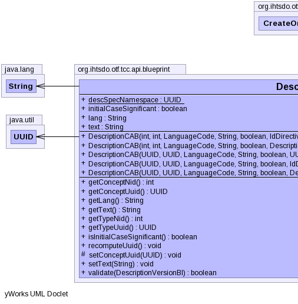
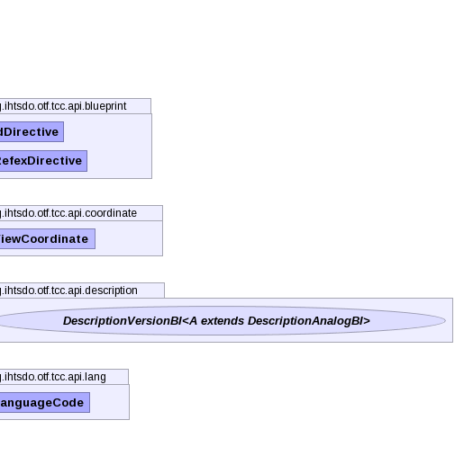

public class DescriptionCAB extends CreateOrAmendBlueprint
DescriptionChronicleBI. This is the preferred method for
updating or creating new descriptions.TerminologyBuilderBI,
DescriptionChronicleBI|  |  |
| Modifier and Type | Field and Description |
|---|---|
static UUID |
descSpecNamespace |
boolean |
initialCaseSignificant |
String |
lang |
String |
text |
idDirective, pcs, properties, referencedComponent, refexDirective| Constructor and Description |
|---|
DescriptionCAB(int conceptNid,
int typeNid,
LanguageCode langCode,
String text,
boolean initialCaseSignificant,
DescriptionVersionBI descriptionVersion,
ViewCoordinate viewCoordinate,
IdDirective idDirective,
RefexDirective refexDirective)
Instantiates a new description blueprint using nid values and a given
descriptionVersion. |
DescriptionCAB(int conceptNid,
int typeNid,
LanguageCode langCode,
String text,
boolean initialCaseSignificant,
IdDirective idDirective)
Instantiates a new description blueprint using nids values.
|
DescriptionCAB(UUID conceptUuid,
UUID typeUuid,
LanguageCode langCode,
String text,
boolean initialCaseSignificant,
DescriptionVersionBI descriptionVersion,
ViewCoordinate viewCoordinate,
IdDirective idDirective,
RefexDirective refexDirective)
Instantiates a new description blueprint using uuid values and a given
descriptionVersion. |
DescriptionCAB(UUID conceptUuid,
UUID typeUuid,
LanguageCode langCode,
String text,
boolean initialCaseSignificant,
IdDirective idDirective)
Instantiates a new description blueprint using uuid values.
|
DescriptionCAB(UUID conceptUuid,
UUID typeUuid,
LanguageCode langCode,
String text,
boolean initialCaseSignificant,
UUID componentUuid,
DescriptionVersionBI descriptionVersion,
ViewCoordinate viewCoordinate,
IdDirective idDirective,
RefexDirective refexDirective)
Instantiates a new description blueprint using uuid values and a given
descriptionVersion. |
| Modifier and Type | Method and Description |
|---|---|
int |
getConceptNid()
Gets the enclosing concept nid associated with this description
blueprint.
|
UUID |
getConceptUuid()
Gets the enclosing concept uuid associated with this description
blueprint.
|
String |
getLang()
Gets a two character abbreviation of language of this description
blueprint.
|
String |
getText()
Gets the text of the description blueprint.
|
int |
getTypeNid()
Gets the description type nid associated with this description blueprint.
|
UUID |
getTypeUuid()
Gets the description type uuid associated with this description
blueprint.
|
boolean |
isInitialCaseSignificant()
Checks if this description blueprint is marked as initial case
significant.
|
void |
recomputeUuid()
Computes the uuid for this description based on the enclosing concept
uuid, description type uuid, language, and description text.
|
protected void |
setConceptUuid(UUID enclosingConceptUuid)
Sets the enclosing concept for this description blueprint based on the
given
enclosingConceptUuid. |
void |
setText(String newText)
Sets the description text for this description blueprint.
|
boolean |
validate(DescriptionVersionBI descriptionVersion)
Validates this description blueprint's fields against the given
descriptionVersion. |
addAnnotationBlueprint, addExtraUuid, addLongId, addPropertyChangeListener, addPropertyChangeListener, addStringId, getAnnotationBlueprints, getComponentNid, getComponentUuid, getComponentUUID, getIdMap, getInt, getPrimoridalUuidString, getPrimoridalUuidString, getProperties, getReferencedComponent, getStatus, getUuid, propertyChange, removePropertyChangeListener, removePropertyChangeListener, replaceAnnotationBlueprints, setComponentUuid, setComponentUuidNoRecompute, setCurrent, setReferencedComponent, setRetired, setStatuspublic static final UUID descSpecNamespace
public String lang
public String text
public boolean initialCaseSignificant
public DescriptionCAB(int conceptNid,
int typeNid,
LanguageCode langCode,
String text,
boolean initialCaseSignificant,
IdDirective idDirective)
throws IOException,
InvalidCAB,
ContradictionException
conceptNid - the nid of the enclosing concepttypeNid - the nid of the description typelangCode - the lang code representing the language of the
descriptiontext - the text of the descriptioninitialCaseSignificant - set to true to mark the
description as initial case significantidDirective - IOException - signals that an I/O exception has occurredInvalidCAB - if the any of the values in blueprint to make are
invalidContradictionException - if more than one version is found for a
view coordinatepublic DescriptionCAB(UUID conceptUuid, UUID typeUuid, LanguageCode langCode, String text, boolean initialCaseSignificant, IdDirective idDirective) throws IOException, InvalidCAB, ContradictionException
conceptUuid - the uuid of the enclosing concepttypeUuid - the uuid of the description typelangCode - the lang code representing the language of the
descriptiontext - the lang code representing the language of the descriptioninitialCaseSignificant - set to true to mark the
description as initial case significantidDirective - IOException - signals that an I/O exception has occurredInvalidCAB - if the any of the values in blueprint to make are
invalidContradictionException - if more than one version is found for a
view coordinatepublic DescriptionCAB(int conceptNid,
int typeNid,
LanguageCode langCode,
String text,
boolean initialCaseSignificant,
DescriptionVersionBI descriptionVersion,
ViewCoordinate viewCoordinate,
IdDirective idDirective,
RefexDirective refexDirective)
throws IOException,
InvalidCAB,
ContradictionException
descriptionVersion.conceptNid - the nid of the enclosing concepttypeNid - the nid of the description typelangCode - the lang code representing the language of the
descriptiontext - the lang code representing the language of the descriptioninitialCaseSignificant - set to true to mark the
description as initial case significantdescriptionVersion - the description version to use as a patternviewCoordinate - the view coordinate specifying which versions are
active and inactiveidDirective - refexDirective - IOException - signals that an I/O exception has occurredInvalidCAB - if the any of the values in blueprint to make are
invalidContradictionException - if more than one version is found for a
view coordinatepublic DescriptionCAB(UUID conceptUuid, UUID typeUuid, LanguageCode langCode, String text, boolean initialCaseSignificant, DescriptionVersionBI descriptionVersion, ViewCoordinate viewCoordinate, IdDirective idDirective, RefexDirective refexDirective) throws IOException, InvalidCAB, ContradictionException
descriptionVersion.conceptUuid - the uuid of the enclosing concepttypeUuid - the uuid of the description typelangCode - the lang code representing the language of the
descriptiontext - the lang code representing the language of the descriptioninitialCaseSignificant - set to true to mark the
description as initial case significantdescriptionVersion - the description version to use as a patternviewCoordinate - the view coordinate specifying which versions are
active and inactiveidDirective - refexDirective - IOException - signals that an I/O exception has occurredInvalidCAB - if the any of the values in blueprint to make are
invalidContradictionException - if more than one version is found for a
view coordinatepublic DescriptionCAB(UUID conceptUuid, UUID typeUuid, LanguageCode langCode, String text, boolean initialCaseSignificant, UUID componentUuid, DescriptionVersionBI descriptionVersion, ViewCoordinate viewCoordinate, IdDirective idDirective, RefexDirective refexDirective) throws IOException, InvalidCAB, ContradictionException
descriptionVersion. Can specify the uuid to be associated
with the new description.conceptUuid - the uuid of the enclosing concepttypeUuid - the uuid of the description typelangCode - the lang code representing the language of the
descriptiontext - the lang code representing the language of the descriptioninitialCaseSignificant - set to true to mark the
description as initial case significantcomponentUuid - the uuid representing the new descriptiondescriptionVersion - the description version to use as a patternviewCoordinate - the view coordinate specifying which versions are
active and inactiveIOException - signals that an I/O exception has occurredInvalidCAB - if the any of the values in blueprint to make are
invalidContradictionException - if more than one version is found for a
view coordinatepublic void recomputeUuid()
throws NoSuchAlgorithmException,
UnsupportedEncodingException,
IOException,
InvalidCAB,
ContradictionException
recomputeUuid in class CreateOrAmendBlueprintNoSuchAlgorithmException - indicates a no such algorithm exception
has occurredUnsupportedEncodingException - indicates an unsupported encoding
exception has occurredIOException - signals that an I/O exception has occurredInvalidCAB - if the any of the values in blueprint to make are
invalidContradictionException - if more than one version is found for a
given position or view coordinatepublic UUID getTypeUuid()
public int getTypeNid()
throws IOException
IOException - signals that an I/O exception has occurredpublic int getConceptNid()
throws IOException
IOException - signals that an I/O exception has occurredpublic UUID getConceptUuid()
public boolean isInitialCaseSignificant()
true, if this description blueprint is initial case
significantpublic String getLang()
public String getText()
protected void setConceptUuid(UUID enclosingConceptUuid)
enclosingConceptUuid.enclosingConceptUuid - the uuid of the enclosing conceptpublic void setText(String newText)
newText - the description textpublic boolean validate(DescriptionVersionBI descriptionVersion) throws IOException
descriptionVersion. Compares the status nid, component nid,
enclosing concept nid, description type nid, language, and text.descriptionVersion - the description version to use for validationtrue, if this description blueprint's fields are
equal to the specified description versionIOException - signals that an I/O exception has occurredCopyright © 2013 International Health Terminology Standards Development Organisation. All rights reserved.